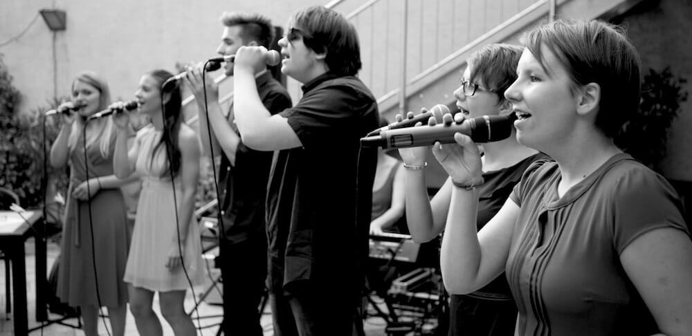

durch die musik haben wir uns kennen gelernt. wir sind solisten und doch
singen wir gemeinsam. wir singen pop, jazz und soul. wir singen unter
der dusche und noch lieber auf bühnen im licht der scheinwerfer. wir
singen a cappella, mit klavier oder band_
wir sind kein chor wie jeder andere. wir sind anders_

wir sind ein bunter haufen, haben unterschiedliche interessen, und teilen alle die selbe leidenschaft: singen_
about lydia
about teresa
about alexander
about amelie
about connor
about lara
...
Firmenfeier? Hochzeit? Taufe? Konzertabend? Wir sind für alles zu haben. Uns gibt es als Trio oder als Gesamtpaket_
Wir stehen seit 2016 gemeinsam in unterschiedlichen Besetzungen auf der Bühne. Als "Vokal Oval", dem Vokalensemble der LMS Neuhofen/Krems, hatten wir u.a. folgende Auftritte: